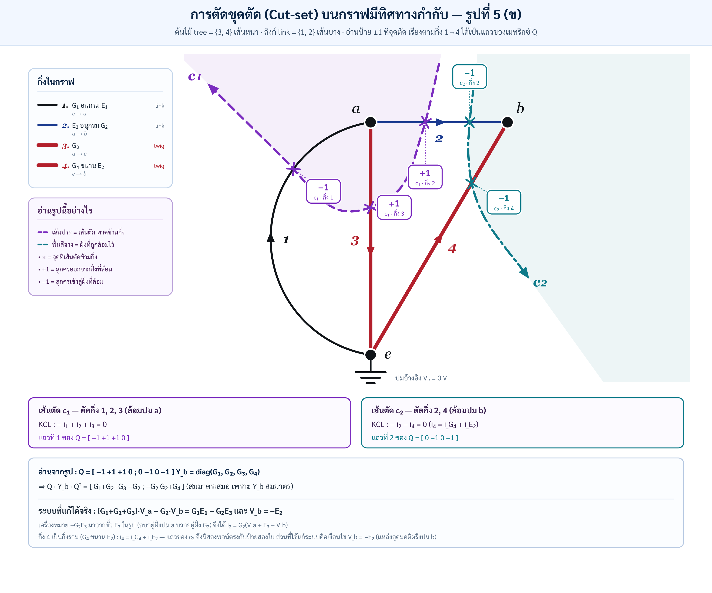

📋 โจทย์จริงและ Component Matrix
วงจรมีปม $a,b,e$ และกราฟกำกับ 4 กิ่ง ให้สร้างสมการชุดตัดแล้วหา $V_a,V_b$ โดย $V_e=0$ V
| กิ่งกราฟ | ทิศ | องค์ประกอบ | สมการ |
|---|---|---|---|
| 1 | e → a | G₁–E₁ | i₁=G₁(E₁−Vₐ) |
| 2 | a → b | E₃–G₂ | i₂=G₂(Vₐ+E₃−Vᵦ) |
| 3 | a → e | G₃ | i₃=G₃Vₐ |
| 4 | e → b | G₄ ∥ E₂ | i₄=iG₄+iE₂; iG₄=−G₄Vᵦ |
แขน E₂ ในวงจรจริง: ต่อขนานกับ G₄ แต่ไม่มีหมายเลขกิ่ง 5 ในกราฟ ใช้ constraint Vᵦ=−E₂ และหากระแสตอบสนอง iE₂ จาก KCL
เครื่องหมายที่ต้องหยุดดู: ขั้ว ลบ ของ E₃ อยู่ฝั่งปม a จึงได้ i₂=G₂(Vₐ+E₃−Vᵦ) และเมื่อจัด KCL พจน์ E₃ จะไปอยู่ RHS เป็น −G₂E₃
Vᵦ = −E₂ · Vₐ = (G₁E₁ − G₂E₃ − G₂E₂)/(G₁+G₂+G₃)
🧭 Directed Graph: ลูกศรคือไม้บรรทัดเครื่องหมาย
ลูกศรไม่บังคับกระแสจริง แต่กำหนดว่าค่าใดเรียก “บวก” ถ้าผลลบ กระแสจริงสวนลูกศร
Complete incidence matrix ของกราฟ 4 กิ่ง
กติกา: +1 ออกจากปม, −1 เข้าปม, 0 ไม่แตะ
Aₐ = [ −1 1 1 0 ; 0 −1 0 −1 ; 1 0 −1 1 ]
ผลรวมทุกคอลัมน์เป็นศูนย์ เพราะกิ่งมีต้นทางและปลายทางอย่างละหนึ่ง ตัดแถว e ได้
A = [ −1 1 1 0 ; 0 −1 0 −1 ]
Insight คะแนนเต็ม: แถว e ซ้ำซ้อนเพราะ KCL ทั้งกราฟรวมกันเป็นศูนย์ กราฟต่อเนื่อง n ปมมี rank n−1 และการเลือกกราวด์คือกำจัดอิสระในการเลื่อนศักย์ทุกปมพร้อมกัน
✏️ KCL ปม a — ไม่ข้ามวงเล็บ
กำหนดกระแสเข้า a เป็นบวก: i₁−i₃−i₂=0
แทนองค์ประกอบ: G₁(E₁−Vₐ)−G₃Vₐ−G₂(Vₐ+E₃−Vᵦ)=0
กระจาย: G₁E₁−G₁Vₐ−G₃Vₐ−G₂Vₐ−G₂E₃+G₂Vᵦ=0
จัดกลุ่ม: (G₁+G₂+G₃)Vₐ−G₂Vᵦ=G₁E₁−G₂E₃
KCL ปม b และ constraint ของ E₂
กิ่ง 2, iG₄ และ iE₂ ชี้เข้าปม b: −i₂−iG₄−iE₂=0
แทน iG₄=−G₄Vᵦ: −G₂(Vₐ+E₃−Vᵦ)+G₄Vᵦ−iE₂=0
ขั้วบวกอยู่ e: Vₑ−Vᵦ=E₂ → 0−Vᵦ=E₂ → Vᵦ=−E₂
iE₂=−G₂(Vₐ+E₃+E₂)−G₄E₂
แก้ Vₐ
(G₁+G₂+G₃)Vₐ−G₂(−E₂)=G₁E₁−G₂E₃
(G₁+G₂+G₃)Vₐ=G₁E₁−G₂E₃−G₂E₂
Vₐ=(G₁E₁−G₂E₃−G₂E₂)/(G₁+G₂+G₃)
(G₁+G₂+G₃)Vₐ=G₁E₁−G₂E₃−G₂E₂
Vₐ=(G₁E₁−G₂E₃−G₂E₂)/(G₁+G₂+G₃)
✂️ Cut-set Matrix Formulation
เลือกส่วนกิ่งความนำเรียง [1,2,3,4] และ cut รอบปม a,b:

QG = [ −1 1 1 0 ; 0 −1 0 −1 ]
Yb = diag(G₁,G₂,G₃,G₄)
Yb = diag(G₁,G₂,G₃,G₄)
| สมาชิก | ผลรวมทีละกิ่ง | ค่า |
|---|---|---|
| M₁₁ | (−1)²G₁+(1)²G₂+(1)²G₃+0²G₄ | G₁+G₂+G₃ |
| M₁₂ | (−1)(0)G₁+(1)(−1)G₂+(1)(0)G₃+(0)(−1)G₄ | −G₂ |
| M₂₁ | (0)(−1)G₁+(−1)(1)G₂+(0)(1)G₃+(−1)(0)G₄ | −G₂ |
| M₂₂ | 0²G₁+(−1)²G₂+0²G₃+(−1)²G₄ | G₂+G₄ |
QG Yb QGᵀ = [ G₁+G₂+G₃ −G₂ ; −G₂ G₂+G₄ ]
Ideal-source caveat: E₂ ไม่มี conductance จำกัด จึงห้ามแกล้งใส่ใน Yb เหมือน resistor เราใช้ constraint Vᵦ=−E₂ และให้ iE₂ เป็น reaction current
[ G₁+G₂+G₃ −G₂ ; 0 1 ][Vₐ;Vᵦ] = [G₁E₁−G₂E₃;−E₂]
เมทริกซ์ QYQᵀ สมมาตรเพราะ Yᵀ=Y และเป็นผลรวม rank-one Gₖqₖqₖᵀ; cut space ตั้งฉากกับ loop space: QBᵀ=0
🎓 Oral Defense Masterclass — 15 ข้อ
เปิดทีละข้อ ซ้อมพูด 🛡️ ให้คล่องก่อน แล้วเติม 🏆 เพื่อเชื่อม topology, independence และ loop–cutset duality
🧪 Directed Graph & Conductance Laboratory
Vₐ
Vᵦ
KCL a residual
KCL b residual
| กิ่ง | กระแสตามลูกศร [A] | ความหมายเครื่องหมาย |
|---|
ลองลาก G₄: Vₐ,Vᵦ ไม่เปลี่ยน แต่ iE₂ เปลี่ยน · ลาก E₃ ผ่านศูนย์: เห็นผลของการกลับขั้วต่อ source vector โดยโครงสร้างเมทริกซ์ไม่เปลี่ยน